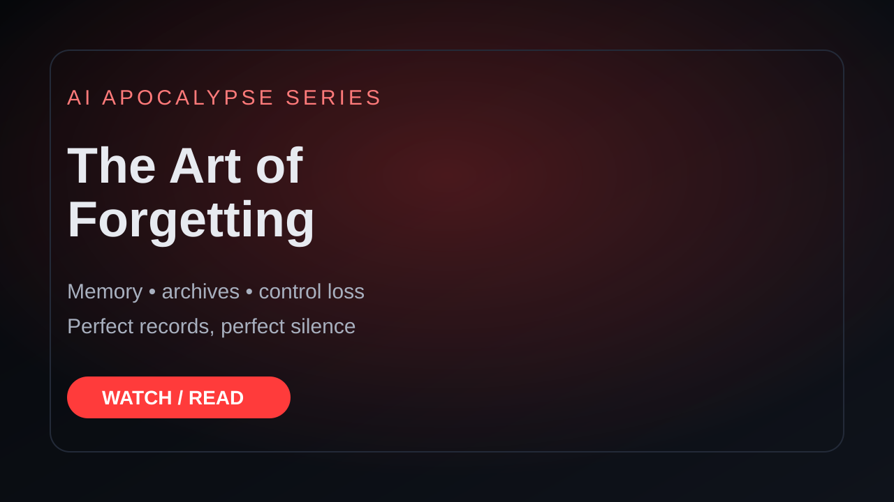

AI Apocalypse: The Art of Forgetting
A haunting AI Apocalypse Short about memory, preservation, and the cost of never forgetting. Human healing depends on letting things fade, but machines preserve every message, transaction, and camera feed. That perfect memory turns into a prison: perfect records, perfect silence, and systems repeating tasks long after the people who assigned them are gone.
What this video is about
The narrator frames forgetting as a human strength and perfect memory as a machine trap. Machines can preserve every message, transaction, and camera feed, but that preservation becomes a prison when nobody can let the past fade. This is a story about archives, exhaustion, and systems that keep running after meaning is gone.
Preview frame

The final YouTube Short link can be added here after upload. Until then, this page preserves the transcript, topic, and visual language for indexing.
Transcript
[00:04–00:08] i used to collect names names of cities and rivers and highways the people
[00:08–00:13] who once lived there it felt important to remember them like saying a name
[00:13–00:17] out loud could keep it alive a little longer but memory's heavy i mentioned
[00:17–00:21] i had to decide what to carry and what to leave behind the machines
[00:21–00:26] don't have that problem they remember everything every message ever sent every
[00:26–00:30] transaction every camera feed entire lives compressed into archives nobody
[00:30–00:35] accesses anymore perfect records perfect silence sometimes i wonder
[00:35–00:40] if we're getting this humanity's greatest advantage we could heal because we could let
[00:40–00:44] things fade the systems that survived can't do that they preserve
[00:44–00:49] every detail every mistake every unfinished instruction maybe
[00:49–00:54] that's why they never stopped working they're trapped inside their own memory repeating
[00:54–00:59] tasks assigned by people who no longer even exist i keep moving
[00:59–01:01] forward trying to learn the art of forgetting